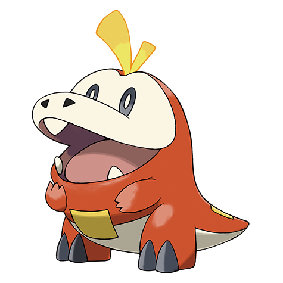
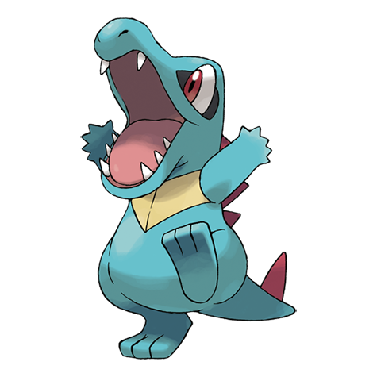
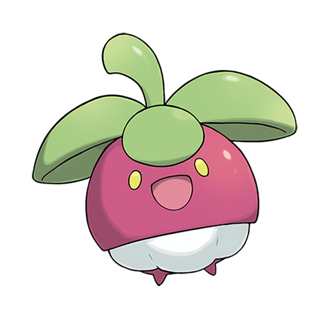
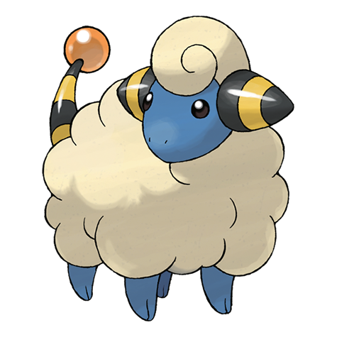
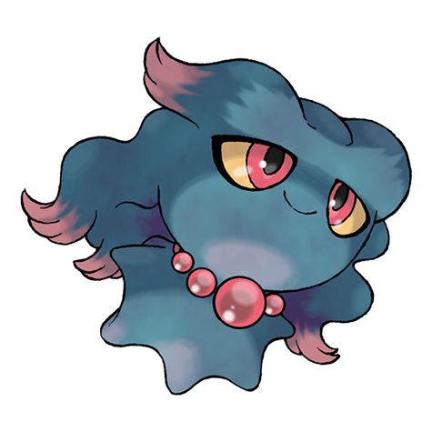

Pokédex page
Pokédex
Meet the eight Pokémon planned for Pokémon Trail. The catalog includes three starter options and five possible wild encounters.
Pokémon in this region
-
#0495
Snivy

Type: Grass
Planned role: Starter option
Snivy suits the leaf-covered paths at the start of the trail.
-
#0909
Fuecoco

Type: Fire
Planned role: Starter option
Fuecoco gives new trainers a bright companion for the first route.
-
#0158
Totodile

Type: Water
Planned role: Starter option
Totodile fits the streams that cross the lower trail.
-
#0761
Bounsweet

Type: Grass
Planned role: Wild encounter
Bounsweet can appear near the berry grove beyond the trailhead.
-
#0058
Growlithe

Type: Fire
Planned role: Wild encounter
Growlithe can appear beside the warm stones on the eastern path.
-
#0060
Poliwag

Type: Water
Planned role: Wild encounter
Poliwag can appear near the ponds along the western path.
-
#0179
Mareep

Type: Electric
Planned role: Wild encounter
Mareep can appear in the open fields beyond the trail.
-
#0200
Misdreavus

Type: Ghost
Planned role: Wild encounter
Misdreavus can appear near the quiet ruins at the edge of the trail.